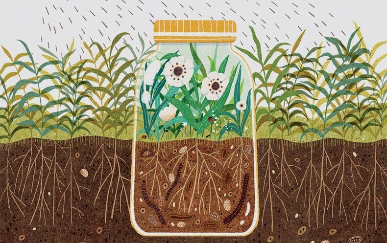
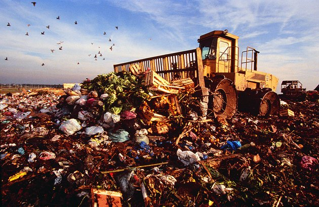
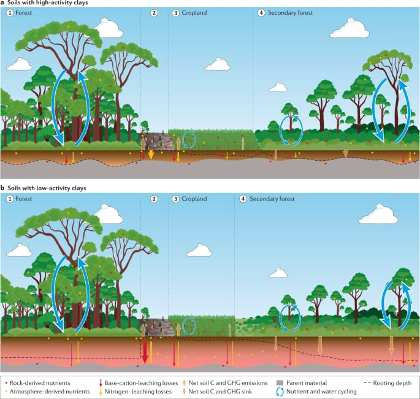
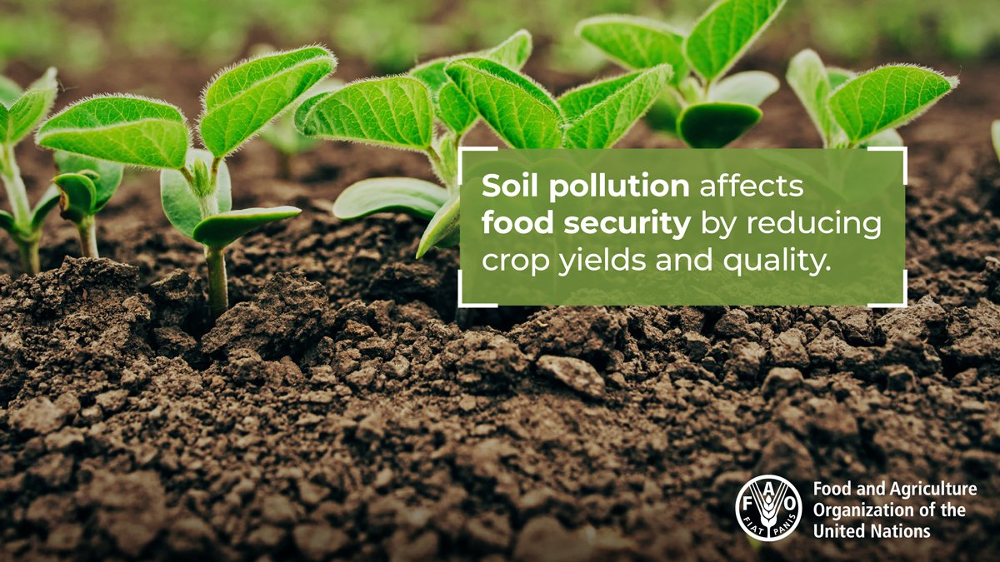
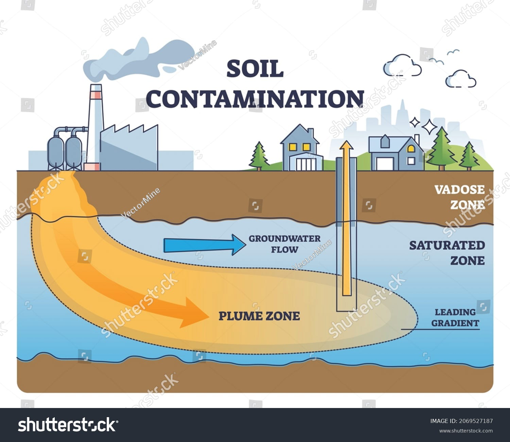
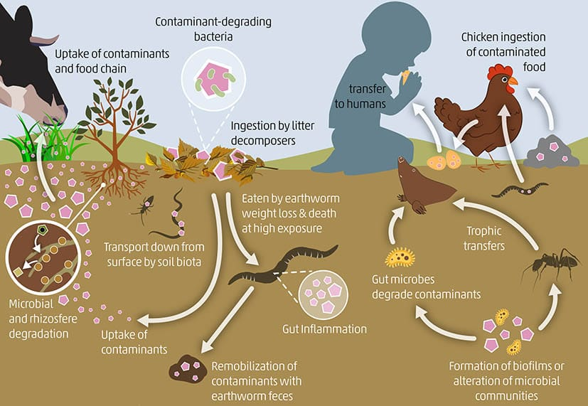

"Keep Soil Clean, Keep Earth Green. Say No to Pollution."
About Soil Pollution
Invisible affliction appears when the concentration of pollutants on the surface becomes so high that it harms land biodiversity and endangers health, particularly through food. Activities such as stock breeding and intensive farming use chemicals, pesticides and fertilisers that pollute the land, just as happens with heavy metals and other natural and man-made chemical substances.
Causes of Soil Pollution
- Industrial Waste
- Agricultural Chemicals
- Improper Waste Disposal
- Deforestation
 Industrial waste is the waste produced by industrial activity which includes any material that is
rendered useless during a manufacturing process such as that of factories, mills, and mining operations.
Types of industrial waste include dirt and gravel, masonry and concrete, scrap metal, oil, solvents,
chemicals, scrap lumber, even vegetable matter from restaurants. Industrial waste may be solid,
semi-solid or liquid in form. It may be hazardous waste (some types of which are toxic) or non-hazardous
waste. Industrial waste may pollute the nearby soil or adjacent water bodies, and can contaminate
groundwater, lakes, streams, rivers or coastal waters.[1] Industrial waste is often mixed into municipal
waste, making accurate assessments difficult. An estimate for the US goes as high as 7.6 billion tons of
industrial waste produced annually, as of 2017.
Industrial waste is the waste produced by industrial activity which includes any material that is
rendered useless during a manufacturing process such as that of factories, mills, and mining operations.
Types of industrial waste include dirt and gravel, masonry and concrete, scrap metal, oil, solvents,
chemicals, scrap lumber, even vegetable matter from restaurants. Industrial waste may be solid,
semi-solid or liquid in form. It may be hazardous waste (some types of which are toxic) or non-hazardous
waste. Industrial waste may pollute the nearby soil or adjacent water bodies, and can contaminate
groundwater, lakes, streams, rivers or coastal waters.[1] Industrial waste is often mixed into municipal
waste, making accurate assessments difficult. An estimate for the US goes as high as 7.6 billion tons of
industrial waste produced annually, as of 2017.
Agricultural chemicals play a significant role in contributing to soil pollution. These chemicals, including pesticides, herbicides, and fertilizers, are extensively utilized in modern agricultural practices to enhance crop yields. However, their excessive and often improper use can lead to several detrimental effects on soil health and the environment: Soil Contamination: Agricultural chemicals, when applied excessively or incorrectly, can leach into the soil. Residues from pesticides and fertilizers may accumulate in the soil, causing contamination. This pollution can persist and impact the quality and fertility of the soil. Impact on Soil Biodiversity: Prolonged exposure to agricultural chemicals can disrupt the natural balance of soil microorganisms and organisms that contribute to soil health. This disruption can affect essential soil processes, such as nutrient cycling and organic matter decomposition, reducing the overall biodiversity of the soil. Water Contamination: Runoff from fields treated with agricultural chemicals can transport these substances to nearby water bodies. This runoff may contaminate groundwater, streams, rivers, and lakes, posing risks to aquatic life and potentially affecting human health through drinking water sources.
Improper waste disposal is a significant contributor to soil pollution, posing detrimental effects on the environment and human health. When various forms of waste, including household, industrial, and hazardous waste, are carelessly discarded without proper treatment or containment, they can contaminate the soil and surrounding ecosystems. Solid waste contains organic components and often hazardous substances that, when deposited in landfills or open dumpsites, can seep into the soil and leach harmful chemicals, heavy metals, and toxins. This leachate not only degrades the soil's quality but also contaminates groundwater, affecting water sources and posing risks to both human health and biodiversity. Moreover, improper waste disposal alters soil stability, compromises its productivity, and contributes to the spread of diseases. To combat this issue, proper waste management practices, such as recycling, safe disposal methods, and implementing waste treatment technologies, are essential in preventing soil contamination and safeguarding the environment.
Deforestation significantly impacts soil health and contributes to soil pollution. When forests are cleared for various purposes such as agriculture, urbanization, or logging, the natural vegetation cover that protects the soil is removed. This exposes the soil to erosion by wind and water, leading to the loss of the topsoil layer, which is rich in organic matter and vital nutrients. The removal of trees and plants disrupts the intricate balance of the ecosystem and the natural processes that maintain soil structure. Deforestation alters the soil's physical, chemical, and biological properties, reducing its fertility and resilience. Soil exposed by deforestation is more susceptible to erosion, compaction, and nutrient loss, contributing to decreased agricultural productivity and increased risks of landslides and flooding. Additionally, the absence of tree roots leads to increased runoff, carrying sediments and pollutants into water bodies, further exacerbating soil and water pollution. Reforestation efforts and sustainable land management practices are crucial in mitigating the adverse effects of deforestation on soil pollution and ecosystem stability. Restoring tree cover helps to prevent soil degradation, support biodiversity, and maintain the health and quality of the soil.
Effects of Soil Pollution
-
Reduced Crop Yield
Reduced crop yield due to soil pollution is a significant consequence of compromised soil health. Soil pollution disrupts the natural balance of essential nutrients, minerals, and microorganisms necessary for healthy plant growth. Contamination from pollutants like heavy metals, chemicals, or improper disposal of waste adversely affects the soil's fertility and structure, leading to decreased agricultural productivity. This disruption can result in stunted plant growth, poor crop quality, and diminished yields. Soil pollution interferes with the plant's ability to absorb nutrients, causing imbalances that impact their development and overall health. Additionally, the presence of pollutants in the soil can harm beneficial soil organisms, affecting their ability to support plant growth. Addressing soil pollution through sustainable agricultural practices, soil remediation, and proper waste management is crucial to safeguarding soil fertility and ensuring adequate crop yields for sustainable food production.
-
Contaminated Groundwater
Contaminated groundwater, stemming from soil pollution, poses a critical threat to both the environment and human health. Soil acts as a natural filtration system; when it becomes polluted, harmful substances such as pesticides, heavy metals, and chemicals can leach through the soil and reach underground aquifers, contaminating the groundwater. This polluted water source is used for drinking, irrigation, and various purposes, leading to significant health risks for humans and ecosystems. Chemical contaminants in the groundwater can cause a range of health issues, from minor ailments to severe diseases, affecting communities reliant on these water sources. Moreover, contaminated groundwater disrupts the delicate balance of aquatic ecosystems, impacting aquatic life and biodiversity. Preventing soil pollution is essential to safeguarding groundwater quality, emphasizing the need for proper waste disposal, reduced use of harmful chemicals, and sustainable agricultural practices to protect this vital resource and ensure a healthier environment.
-
Loss of Biodiversity
The loss of biodiversity is a critical consequence of soil pollution, significantly impacting ecosystems and the environment. Soil pollution, caused by the introduction of various pollutants such as heavy metals, chemicals, and improper waste disposal, disrupts the delicate balance of soil ecosystems. This disruption adversely affects the diverse array of organisms living in the soil, from microorganisms to larger soil-dwelling creatures. Soil-dwelling organisms play crucial roles in nutrient cycling, soil aeration, and maintaining the soil's health and fertility. When exposed to pollutants, these organisms suffer, leading to a decline in their populations and diversity. This loss of biodiversity can have far-reaching implications, disrupting ecosystem functions, reducing soil resilience, and affecting plant growth. Protecting biodiversity in soil is vital for maintaining healthy ecosystems and the overall balance of nature. Implementing measures to prevent soil pollution, promoting sustainable land use practices, and raising awareness about the importance of soil biodiversity are essential steps in mitigating the loss of biodiversity caused by soil pollution.
-
Health Problems
Human exposure to soil pollutants, such as heavy metals and toxic chemicals, can lead to a range of health problems. These may include respiratory issues, skin diseases, and even more severe conditions like certain cancers.
Prevention and Remediation
Ways to prevent and remediate soil pollution include:
- Proper Waste Management
- Reducing Chemical Use in Agriculture
- Reforestation
Recycling of waste products will also contribute to a reduction in soil contamination due to landfills. Promoting healthy agricultural practices such as the use of organic manure and organic farming methods can help reduce the number of chemical fertilizers used on agricultural soils.
Encouraging and implementing organic farming practices can significantly reduce the reliance on synthetic chemicals. This includes the use of natural fertilizers (like compost and manure) and biological pest control methods, reducing the need for chemical pesticides and fertilizers
Trees and their root systems help anchor soil, preventing erosion caused by wind and water. Soil erosion can result in the loss of topsoil, which often carries pollutants and chemicals. Reforestation helps maintain soil integrity, preventing soil degradation and pollution.